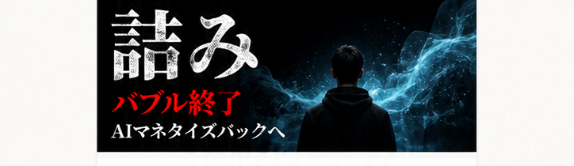
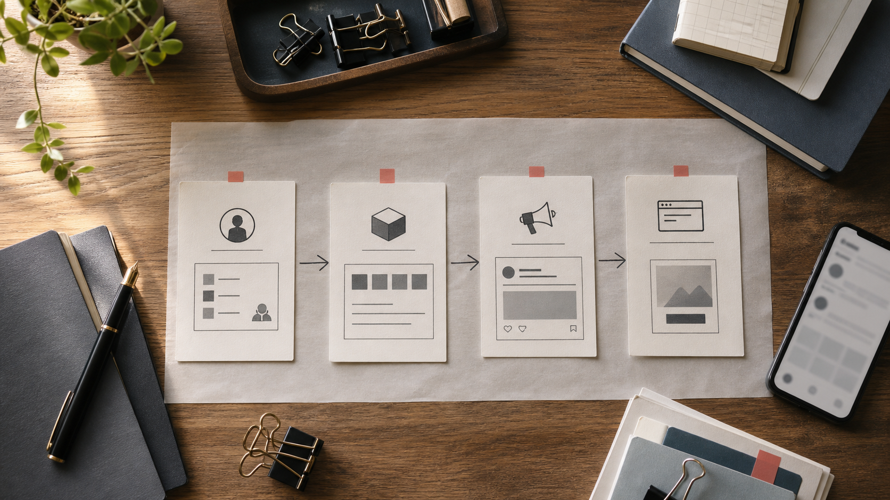
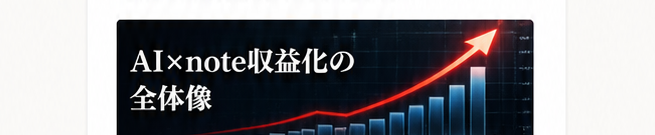
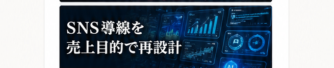
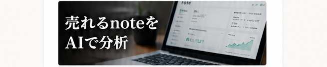
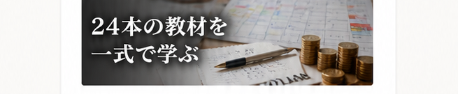

このページを読まない自由はあります
でも、考えない自由はもうありません
AIを使えば稼げる、そんな時代は
静かに終わりました
このページは、本気でAIとSNSを使って
商品を売って稼ぎたい人のために書いています
AIツールは一般化し、誰でも簡単に使えるようになりました。
ネットには「AIで月100万円」という情報が溢れています。でも、その多くは本当のことではありません。
テンプレのプロンプトを少し変えるだけ。他人の投稿を真似して、AIに書かせて、投稿するだけ。
そんなやり方では、もう誰にも響きません。
SNSの成功報告の多くは、演出されたハリボテです。実際には、再現性のない一発屋か、高額商品に誘導するための嘘にすぎません。
多くの人が、設計も考えずにコンテンツを買い漁り、ただ学ぶだけで満足してしまいます。
結果、時間もお金も失い、何も変わらないまま終わります。
もう差別化できない
必要なのは、AIを使って「売るための設計力」です。
闇雲に投稿しても、商品を作っても売れません。正しい順番で設計し、導線を作り、販売ページで仕上げる。
この4つが揃ったとき、はじめて売上が生まれます。

この全体像を理解し、再現できる人だけが、これからの時代を勝ち抜くことができます。




これらは、AIマネタイズパックで扱っているテーマのほんの一部です。
売れているnoteをAIで分析し、SNSの投稿導線に落とし込み、プロフィール、固定投稿、教育投稿、販売ページまでつなげる。
この一連の流れを知らないまま、便利なプロンプトだけを増やしても意味がありません。
一時的に投稿が伸びることはあります。保存数が増えることもあります。フォロワーが少し増えることもあります。
でも、売上につながらない。
なぜなら、その投稿が「誰に、何を、どんな順番で買ってもらうための投稿なのか」が決まっていないからです。
あらゆるものが静かに崩壊しました
AIを適切に使える人間が、10人分の作業を1人でこなすようになりました。
資料作成、リサーチ、投稿作成、文章の添削、画像生成、販売ページの下書き、動画の構成案。
少し前まで外注していた作業が、今では個人の手元で完結します。
一方で、AIに取り残された人の椅子は少しずつ奪われています。
国、会社、資格、過去の経験、これまでの常識に人生を委ねていた人ほど、変化に気づくのが遅れました。
そして気づいた頃には、すでに周回遅れになっている。
これが脅しではなく、今のSNSとnote市場で起きている現実です。
ただし、勘違いしてほしくありません。
「AIを触ったことがないから終わり」ではありません。
「フォロワーが少ないから無理」でもありません。
「文章がうまくないから売れない」でもありません。
むしろ、正しい設計を知らないまま自己流で走り続けている人のほうが危険です。
最も報われない時代です
2024年までは、まだ「AIすごい」「ChatGPTを試してみた」という段階でした。
Googleみたいに検索できるらしい。メール返信に使えるらしい。ブログの下書きに使えるらしい。
その程度でも、少し触っているだけで先行者に見えました。
しかし2025年からは明確に流れが変わりました。
AIは「使えたら便利」ではなく「使える前提」になりました。
つまり、AIを使うだけでは何の強みにもならなくなったのです。
この過渡期に暗躍したのが、自称AIコンサルや、焼き増し教材の販売者たちでした。
無料相談会に呼び、Zoom面談で高額講座を売る。
中身はプロンプトを並べただけで、購入後は動画を見ておいてくださいで終わり。
質問しても返信が遅い。添削は浅い。発信者本人はほとんど出てこない。
そんな話を何度も聞いてきました。
しかも、AI系の商品は見た目だけなら一瞬で作れてしまいます。
表紙を派手にして、プロンプトをそれっぽく並べ、月収報告を載せれば、初心者には本物に見えてしまう。
失敗する時代になりました
だからこそ、僕は今回「AIマネタイズパック」を売るためだけのLPを作っているわけではありません。
そもそも、何を知らなければいけないのか。
どんな順番で学ばなければいけないのか。
どの情報は捨てて、どの情報だけを手元に残すべきなのか。
そこから話さなければ、また同じ失敗を繰り返す人が増えるだけだからです。
AIマネタイズパックは、単なる記事の詰め合わせではありません。
AI×note、SNS運用、販売導線、ClaudeやGeminiの活用、プロンプト、マーケティング思考。
それぞれをバラバラに読むのではなく、売上につながる流れとして使うための素材です。
「AIで何かしたい」ではなく「AIを使って売上を作りたい」人のためにまとめています。
今、SNSを開けばAI発信者が大量にいます。
毎日のように新しいツールが紹介され、新しいプロンプトが流れ、新しい副業ノウハウが出てきます。
でも、そのほとんどは消費されて終わりです。
保存して、あとで見ようと思って、結局見ない。
試してみて、少し便利だと思って、次の日には別の情報に流される。
これを何ヶ月続けても、売上は積み上がりません。
必要なのは、情報量ではなく順番です。
まず誰に売るのかを決める。
次に、相手が欲しくなる商品を設計する。
その商品を必要だと気づいてもらう投稿を作る。
最後に、迷わず買える販売ページへつなげる。
この順番を間違えると、どれだけAIを使っても空回りします。
記事を書くことではありません
記事を書く前に、誰のどんな悩みを解決するのかを決めること。
タイトルを決める前に、その人が思わずクリックしたくなる約束を決めること。
販売ページを書く前に、なぜ今買うべきなのかを言語化すること。
投稿を作る前に、その投稿が集客なのか、教育なのか、販売なのかを決めること。
ここを飛ばすから、AIで文章を量産しても売れないのです。
逆に言うと、ここさえ揃えば、文章力が特別に高くなくても戦えます。
AIに任せる部分と、自分で考える部分を分けられるようになります。
AIに作業をさせ、自分は設計を見る。
この立ち位置に変わった瞬間、同じ時間を使っていても結果はまるで変わります。
最初に失敗する人は、ほぼ同じ順番で失敗します。
まず、売れている人の投稿を真似します。
次に、AIで似たような投稿を量産します。
そして、プロフィールや固定投稿を整えないまま、noteへのリンクを貼ります。
売れません。
すると次に、もっと強いプロンプトを探し始めます。
もっとバズる型、もっと煽れるタイトル、もっと便利なGPTs。
でも、それでも売れません。
理由はシンプルです。
売れるための導線がないからです。
読者は投稿を見て、あなたに興味を持ち、プロフィールを見て、固定投稿を読み、無料部分を読んで、ようやく購入を検討します。
この途中のどこかが弱いだけで、購入は止まります。
だから、AIマネタイズは「投稿術」ではなく「導線設計」なのです。
売上は安定しません
バズ投稿は入口でしかありません。
入口だけ広げても、奥に商品がなければ意味がない。
商品があっても、なぜ欲しいのかが伝わらなければ意味がない。
欲しいと思っても、今買う理由がなければ人は動きません。
ここまでを一つの線として見られる人だけが、AIを使って売上を積み上げられます。
だからこのLPでは、もう少し踏み込んだ判断材料まで渡します。
AIを学んでも稼げない人が、ほぼ全員見落としていること。
教材を買っても、プロンプトを集めても、SNSを更新しても変わらない理由。
そして、AIマネタイズパックをただの記事集ではなく「設計図」として使うための前提。
ここを理解しておくと、AIマネタイズパックを正しく活かせます。
送ってくれた方に
5ジャンル対応バズ投稿テンプレ100選
を特別にプレゼントします
ここで終わりではなく
まずはKW「AIパック」を送って
売れる投稿の型を受け取ってください